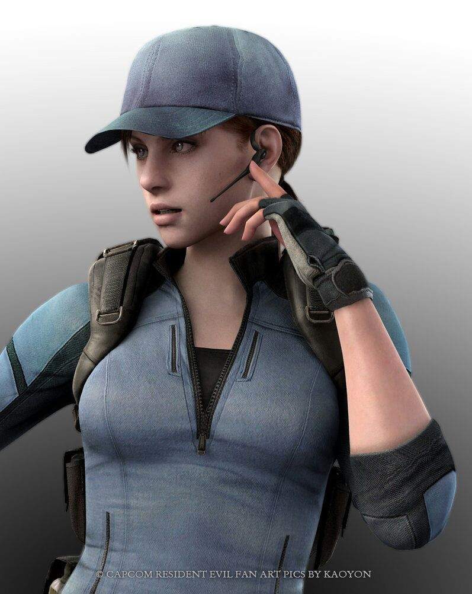

Ocupação Atual: Capitão do Esquadrão Lobo de CaçaNão se sabe muito sobre a infância de Redfield, além de que ele e Claire Redfield foram criados em Nova Iorque após terem perdido os pais em algum momento antes de 1998, tendo apenas um ao outro como família. Ao alcançar a maior idade, Redfield ingressou na Força Aérea dos Estados Unidos, onde recebeu treinamento para pilotar aviões e helicópteros, além de treinar para usar uma ampla variedade de armas, incluindo facas, ficando principalmente conhecido por seu combate corpo-a-corpo e pontaria pelas quais chegou a ganhar um concurso. Durante esse período, ele serviu em uma unidade ao lado de Barry Burton, que se tornou seu amigo íntimo e mentor. No geral, embora seu caráter direto fosse adequado para um piloto e ele se mostrasse muito promissor na aeronáutica, Redfield mantinha fortes convicções que o colocavam em desacordo com seus oficiais seniores, culminando com ele sendo dispensado do exército em 1995, embora seja incerto se a dispensa ocorrera por sua renuncia ou por insubordinação

Nome: Jill Valentine
Ocupação Atual: S.O.A. da B.S.A.A.Não se sabe muito sobre a infância de Redfield, além de que ele e Claire Redfield foram criados em Nova Iorque após terem perdido os pais em algum momento antes de 1998, tendo apenas um ao outro como família. Ao alcançar a maior idade, Redfield ingressou na Força Aérea dos Estados Unidos, onde recebeu treinamento para pilotar aviões e helicópteros, além de treinar para usar uma ampla variedade de armas, incluindo facas, ficando principalmente conhecido por seu combate corpo-a-corpo e pontaria pelas quais chegou a ganhar um concurso. Durante esse período, ele serviu em uma unidade ao lado de Barry Burton, que se tornou seu amigo íntimo e mentor. No geral, embora seu caráter direto fosse adequado para um piloto e ele se mostrasse muito promissor na aeronáutica, Redfield mantinha fortes convicções que o colocavam em desacordo com seus oficiais seniores, culminando com ele sendo dispensado do exército em 1995, embora seja incerto se a dispensa ocorrera por sua renuncia ou por insubordinação